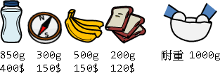
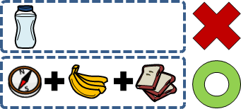
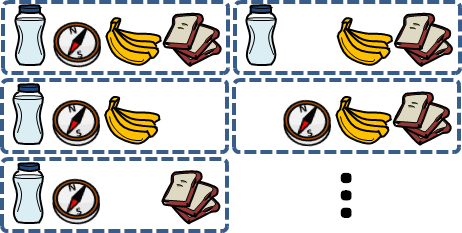
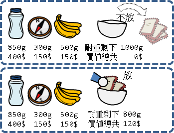
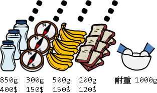
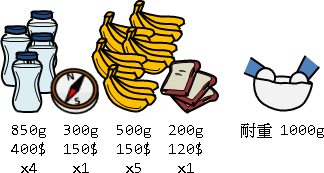
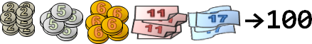

Knapsack Problem
Knapsack Problem
將一群物品儘量塞進背包裡面，令背包裡面的物品總價值最高。背包沒有容量限制，無論物品是什麼形狀大小，都能塞進背包；但是背包有重量限制，如果物品太重，就會撐破背包。
以數學術語來說，背包問題就是選擇一個最理想的物品子集合，在符合重量限制的前提下、求得最大的利益！
背包問題有很多變形，接下來將會一一介紹。
Fractional Knapsack Problem
Fractional Knapsack Problem
Fractional是「分數」的意思。一個物品可以切下一部分、只取幾分之幾放進背包。
我們很容易就可以制定一個Greedy策略：價值與重量的比值最高的物品，優先放入背包。
總是用當下最好的物品填滿背包空隙，最後沒有留下任何空隙。每一份背包空間，都是最有價值的物品，就算是交換物品也無法增加總價值──顯然是最佳解。
時間複雜度是O(N)。其中N為物品數量。
0/1 Knapsack Problem
0/1 Knapsack Problem
「0/1」的意思是：每種物品只會放進背包零個或一個。一個物品要嘛整個不放進背包、要嘛整個放進背包。物品無法切割。
大家看到這個問題，第一個直覺通常是貪心法：優先挑選價值最高的物品。然而，價值高的物品，放入背包之後，有可能留下很大的空隙，浪費背包耐重量；反而是狂塞一些零零碎碎的不值錢東西，才能獲得最多的利益。
聰明的人會想：優先挑選價值與重量比值最大的物品。不過這個方法也有問題，仍然有可能出現方才提到的現象。你能舉例嗎？這有助於了解0/1背包問題的關鍵點。
0/1背包問題的關鍵點，在於如何有效利用背包的剩餘重量，找出最好的物品組合方式。
0/1背包問題是經典的NP-complete問題，無法快速求得精確解，只能折衷求得近似解。然而，當數值範圍不大時，得以用動態規劃快速求得精確解。
本篇文章打算藉由0/1背包問題的各種細節，介紹動態規劃的各種技巧。大綱如下：
讓背包裡面的物品總價值最大 讓背包裡面的物品總價值最小（背包不放東西就好了，沒有什麼好討論的。） 此時背包裡面放了哪些物品 此時背包裡面的物品有哪些不同的組合方式 此時背包裡面的物品有幾種不同的組合方式 此時背包裡面的物品盡量最少（多）個 此時背包裡面的物品總重量，最少是多少、最多是多少
UVa 431 624 990 10130 10819 10980
讓背包裡面的物品總價值最大（一）
窮舉法是最基本的方法。針對全部物品，窮舉所有子集合，找出物品總重量符合限制、物品總價值最大的子集合。
所有的子集合總共O(2^N)個，驗證一個子集合需時O(N)，所以時間複雜度為O(2^N * N)。其中N是物品的數量。
物品的編號順序是無所謂的。預先按照重量（或者是價值）排序所有物品，並且採用backtracking進行窮舉，可以大幅減少計算時間。
讓背包裡面的物品總價值最大（二）
動態規劃是比較有效率的方法。分割問題的方式很簡單：對某一件物品來說，我們可以選擇放或不放；然後移去這件物品，縮小問題範疇。
一件物品不放進背包，背包價值不變、背包耐重不變；一件物品放進背包，背包價值上升、背包耐重下降。遞迴公式為：
c(n, w) = max( c(n-1, w), c(n-1, w-weight[n]) + cost[n] )
^^^^^^^^^ ^^^^^^^^^^^^^^^^^^^^^^^^^^^^^
不放 -> 0 有放 -> 1
n：第0個到第n個物品要放進背包內。
w：背包耐重限制。
c(n, w)：只有第0個到第n個物品，耐重限制為w，此時的背包問題答案。
weight[n]：第n個物品的重量。
cost[n]：第n個物品的價值。
仔細考慮邊界條件，例如耐重不足的情況、沒有物品的情況：
c(n, w) =
{ -INF , if w < 0
{ -INF , if n < 0
{ 0 , if n = 0 and w >= 0
{ max( c(n-1, w), , if n > 0 and w >= 0
{ c(n-1, w-weight[n]) + cost[n] )
避免存取負的物品、負的耐重：
c(n, w) =
{ 0 , if n = 0
{ c(n-1, w) , if n > 0
{ and w-weight[n] < 0
{ max( c(n-1, w), , if n > 0
{ c(n-1, w-weight[n]) + cost[n] ) and w-weight[n] >= 0
仔細觀察計算順序與表格，每次計算只需要上方和左上方的格子。我們可以重複利用記憶體，建立一條陣列就夠了；不過計算順序要改成由陣列後端開始，才不會覆蓋左上方的格子。
時間複雜度O(NW)，空間複雜度O(W)。其中N是物品數量，W是背包重量限制。
時間複雜度包含了與輸入資料數量無關的變數W。按照定義，時間複雜度不是多項式時間──儘管它看起來是多項式。
此時背包裡面放了哪些物品
建立一個二維陣列，記錄每一個問題的答案，是由哪個子問題推導出來的。每個問題只有「放」或「不放」兩種情形。
這段程式碼只能找出其中一種組合方式，是字典順序最小的組合方式。只是列印順序剛好前後顛倒。
最原始的二維表格，亦足以判斷「放」或「不放」。程式碼稍嫌冗長，參考看看就好。
此時背包裡面的物品有哪些不同的組合方式
backtracking，窮舉所有組合方式。時間複雜度O(NA)，A是組合方式數量。
此時背包裡面的物品總共幾種不同的組合方式
每當遇到放與不放都沒有差別的時候，就表示遇到不同的組合方式，必須計數。
此時背包裡面的物品盡量最少（多）個
消極的方法是增加表格維度，以記錄物品個數。計算完畢之後，搜尋表格，窮舉物品個數m，找到物品總價值最小的。
c(n, w, m) = max( c(n-1, w-weight[n], m-1) + cost[n] , c(n-1, w, m) ) m：放入的物品個數。
積極的方法是在計算過程當中，同步記錄背包裡面放了多少個物品。遇到放與不放都沒有差別的時候，就用物品的個數來決定要不要放，採用物品較少的方式。
附帶一提，這個方法也能找出此時背包裡面的物品總重量，最少是多少、最多是多少。
此時背包裡面的物品總重量，最少是多少、最多是多少
計算完畢之後，搜尋表格，找到所有最佳解的位置，取物品總重量最小的。但是無法求出物品總重量最多是多少。
讓背包裡面的物品總價值最大（三）
回到原始問題。設計遞迴公式其實還有許多種方式。
先前我們遞歸「物品編號」暨「背包耐重」，其實也可以改為遞歸「物品編號」暨「物品總重量」。
c(n, w) =
{ -INF , if n < 0
{ -INF , if w < 0
{ -INF , if n = 0 and w != 0
{ ^^^^^^^^^^
{ 0 , if n = 0 and w = 0
{ ^^^^^^^^^
{ max( c(n-1, w), , if n > 0
{ c(n-1, w-weight[n]) + cost[n] )
n：第0個到第n個物品要放進背包內。
w：放進背包內的物品總重量！
c(n, w)：只有第0個到第n個物品，背包內的物品總重量為w，此時的背包問題答案！
weight[n]：第n個物品的重量。
cost[n]：第n個物品的價值。
時間複雜度O(NW)，空間複雜度O(W)。其中N是物品數量，W是物品總重量。
計算完畢之後，搜尋表格，找到所有最佳解的位置；另外也很容易找到此時背包裡面的物品總重量，最少是多少、最多是多少。大可不必使用輔助表格。
讓背包裡面的物品總價值最大（四）
一開始我們遞歸「物品編號」暨「背包耐重」，讓「物品總價值」越大越好。最後直接從表格取得答案。
然後我們遞歸「物品編號」暨「物品總重量」，讓「物品總價值」越大越好。最後搜尋表格，找到物品總價值最大的答案。
其實也可以遞歸「物品編號」暨「物品總價值」，讓「物品總重量」越小越好。最後搜尋表格，找到符合背包重量限制的答案。
w(n, c) =
{ +INF , if n < 0 or c < 0
{ 0 , if n = 0 and c = 0
{ min( w(n-1, c), , if n > 0
{ w(n-1, c-cost[n]) + weight[n] )
n：第0個到第n個物品要放進背包內。
w：放進背包內的物品總重量！
c(n, w)：只有第0個到第n個物品，背包內的物品總重量為w，此時的背包問題答案！
weight[n]：第n個物品的重量。
cost[n]：第n個物品的價值。
時間複雜度O(NC)，空間複雜度O(C)。其中N是物品數量，C是物品價值總和。
讓背包裡面的物品總價值最大（五）
物品放入背包時，按照物品編號順序來放。每一種物品都可能是最後一個放入背包的物品。
c(n, w) = max( 0 , 都不放 c(0, w-weight[0]) + cost[0] , 最後是放第0個物品 c(1, w-weight[1]) + cost[1] , 最後是放第1個物品 ... , ... c(n-1, w-weight[n-1]) + cost[n-1] 最後是放第n-1個物品 ) n：第0個到第n個物品要放進背包內。 w：背包負重上限。 c(n, w)：只有第0個到第n個物品，負重限制為w，此時的背包問題答案。 weight[n]：第n個物品的重量。 cost[n]：第n個物品的價值。
時間複雜度O(NNW)，空間複雜度O(NW)。其中N是物品數量，W是物品總重量。
【待補文字】
讓背包裡面的物品總價值最大（六）
polynomial-time approximation scheme http://www.cse.cuhk.edu.hk/~chi/csc5160-2008/notes/L17-PTAS.pdf cost 超級大 沒辦法用DP解的時候 把每個物品的 cost 硬是降下去 c' = ceil(c / maxc * n / ε) 就可以用 O(nc') = O(nnn/ε) DP 算出一個近似解，誤差範圍在精確解的ε倍以下。 解的好壞 端看 cost 降少還是降多
讓背包裡面的物品總價值最大（七）
背包問題是「最佳化」問題。我們可以用各種最佳化演算法，快速求得近似解，例如「Linear Programming線性規劃」、「Genetic Algorithm基因演算法」。不過這已經脫離本篇文章的主旨了，就請讀者自行研究吧！
UVa 10715
總結
一、建立輔助表格，處理附加的條件。 二、增加表格維度，處理更多的條件。 三、最佳解可能有許多個，搜尋表格以找到所有最佳解。 四、設計遞迴公式有著許多種不同的策略。 五、遞迴公式有時能夠順手處理附加的條件，不需輔助表格。 六、調整數值規模，得到近似解。
Unbounded Knapsack Problem
無限背包問題
物品有許多種類，每一種物品都無限量供應的背包問題。
UVa 10465
演算法
分割問題的方式可以仿照0/1背包問題。0/1背包問題是一個物品的去留；無限背包問題則是一種物品的去留。考慮一種物品的各種用量：
c(n, w) = max( c(n-1, w - weight[n] * 0) + cost[n] , 用去零個第n種物品 c(n-1, w - weight[n] * 1) + cost[n] * 1 , 用去一個第n種物品 c(n-1, w - weight[n] * 2) + cost[n] * 2 , 用去兩個第n種物品 ... , ... ) n：第0種到第n種物品要放進背包內。 w：背包耐重限制。 c(n, w)：只有第0種到第n種物品，耐重限制為w，此時的背包問題答案。 weight[n]：第n種物品的重量。 cost[n]：第n種物品的價值。
時間複雜度是O(NWW)，空間複雜度是O(W)。
演算法
更好的方式，其實仍是一個物品的去留：
c(n, w) = max( c(n-1, w), c(n, w-weight[n]) + cost[n] )
^^
只有這裡不同，因為物品無限量供應。
時間複雜度降低成O(NW)，空間複雜度為O(W)。
UVa 10898
Bounded Knapsack Problem
有限背包問題
物品有許多種類，每一種物品都是限量供應的背包問題。
演算法
仿照無限背包問題，考慮每一種物品的用量：
c(n, w) = max(
c(n-1, w - weight[n] * 0) + cost[n] * 0 , 用去零個第n種物品
c(n-1, w - weight[n] * 1) + cost[n] * 1 , 用去一個第n種物品
... , ...
c(n-1, w - weight[n] * number[n]) 用去number[n]個第n種物品
+ cost[n] * number[n]
)
n：第0種到第n種物品要放進背包內。
w：背包耐重限制。
c(n, w)：只有第0種到第n種物品，耐重限制為w，此時的背包問題答案。
weight[n]：第n種物品的重量。
cost[n]：第n種物品的價值。
number[n]：第n種物品的數量。
時間複雜度是O(NWM)，空間複雜度是O(W)。其中M是物品數量最大值（不是總和）。
UVa 10086
演算法
Scaling Method。同種類的M個物品，實施二進位分解，重捆成1、2、4、8、……、2^k、M - 2^k個物品，一共⌈logM⌉捆。這些捆的0/1組合，可以湊出各種數量的物品。
一捆視作一個物品，直接套用0/1背包問題，物品數量從N變成O(N * logM)。
時間複雜度是O(NlogM * W)，空間複雜度是O(W)。
演算法
http://www.cnblogs.com/GXZC/archive/2013/01/08/2851153.html
http://morris821028.github.io/2016/12/18/jg-20008/
各個同餘系分開處理，實施凸包優化，斜率皆是一，可視作deque優化。時間複雜度O(NW)。
Money Changing Problem
各種相關問題
能否湊得某個價位（Money Changing Problem） 湊得某個價位的湊法總共幾種（Coin Change Problem） 湊得某個價位的最少（多）錢幣用量（Change-Making Problem） 湊得某個價位的最少（多）錢幣種類 所有無法湊得的價位當中，最大的價位（Frobenius Number） 所有無法湊得的價位總共幾種 限制錢幣用量，求得Frobenius Number加一（Postage Stamp Problem）
能否湊得某個價位（Money Changing Problem）
給定許多種不同面額的錢幣，能否湊得某個價位？每種面額的錢幣都無限供應，一定夠用。
Money Changing Problem其實就是Unbounded Knapsack Problem的變形：物品變成錢幣，物品重量變成面額，物品價值變成「湊得到、湊不到」兩種情況，累計價值的方式從加法運算變成OR運算。
唯一要小心的是：表格的初始值，把0元設定為可以湊到；但是正常情況下，是無法湊到0元的。
c(n, m) = c(n-1, m) or c(n, m-price[n])
^^^^^^^^^ ^^^^^^^^^^^^^^^^
不用這種錢幣 用去一個錢幣
n：用第0種到第n種錢幣來湊得價位。
m：欲湊得的價位值。
c(n, m)：用第0種到第n種錢幣湊得價位m的湊法數目。
price[n]：第n種錢幣的面額大小。
UVa 10306 10898 10261
湊得某個價位的湊法總共幾種（Coin Change Problem）
將OR運算改為加法運算罷了。
c(n, m) = c(n-1, m) + c(n, m-price[n])
^^^^^^^^^ ^^^^^^^^^^^^^^^^
不用這種錢幣 用去一個錢幣
c(n, m)：用第0種到第n種錢幣湊得價位m的湊法數目。
UVa 147 357 674 10313 430
湊得某個價位的最少錢幣用量（Change-Making Problem）
c(n, m) = min( c(n-1, m) , c(n, m-price[n]) + 1 )
^^^^^^^^^ ^^^^^^^^^^^^^^^^^^^^
保持一樣 用去一個錢幣
c(n, m)：用第0種到第n種錢幣湊得價位m，最少所需要的錢幣數量。
湊得某個價位的最少錢幣用量（Change-Making Problem）
當各種錢幣的面額有特別的關係時，有速度很快的Greedy演算法，詳細情形請參考Change-Making Problem。
湊得某個價位的錢幣用量，有哪幾種可能性。
物品數量不多時，可以直接以int變數（可充作32個元素的bitset）或long long變數（可充作64個元素的bitset）作為一個bitset，利用位元運算求出所有可能性。
UVa 242 10032 10690 10930
能否湊得某個價位，但是錢幣限量供應！
儘管可以直接套用bounded knapsack problem，但是事實上有一個比較簡潔的Greedy演算法 ：節省錢幣用量的前提下，盡量湊出各種價位。
UVa 233 711
所有無法湊得的價位當中，最大的價位（Frobenius Number）
Sebastian Böcker, Zsuzsanna Lipták. A Fast and Simple Algorithm for the Money Changing Problem. Algorithmica, 2007, 48, 413-432.
結合同餘理論、DP、Greedy，時間複雜度是O(N*a1)，N為面額種類數，a1是最小的錢幣面額。
這個演算法也可以同時解決Money Changing Problem。
【待補文字】
限制錢幣用量，求得Frobenius Number加一（Postage Stamp Problem）
【待補文字】
Change-Making Problem
找錢問題
你去商店買東西，你掏出了一張百元鈔票，買了一包23元的零食。櫃員須找錢給你，但是你希望櫃員找給你的硬幣數目越少越好，如此口袋會輕一點。那麼櫃員會給你幾個硬幣呢？
演算法（Cashier's Algorithm）
演算法非常直覺。填答案的原則：先找給你面額較高的硬幣。
時間複雜度是O(N)，N是銅板種類。
UVa 166
適用情況（Pearson's Algorithm）
現實生活中，錢幣面額是經過精心設定的，可以安心使用Cashier's Algorithm。
不幸的消息是，並不是任意一種面額組合，都可以使用Cashier's Algorithm。要使用Cashier's Algorithm，得先經過驗證才行：
一、各種價錢都能找，不會有找不出來的情況。 二、錢幣用量真的是最少的。
時間複雜度是O(N^3)。
【問題描述】
一組錢幣面額 (c1, c2, ..., cn)，幣值大小順序是 c1 < c2 < ... < cn。
找出不適用貪心法的最小價位 M。也就是 1 ~ M-1 用貪心法是對的。
正確湊得 M 的最少錢幣用量為 (b1, b2, ..., bn)，稱呼為正確湊法 b 或者 b(M)。
貪心湊得 M 的最少錢幣用量為 (g1, g2, ..., gn)，稱呼為貪心湊法 g 或者 g(M)。
【性質甲】正確湊法有最佳子結構（包含關係）
若湊法 x 已經是最佳解，
則比 x 小的 y 統統都是最佳解（x >= y，每一個對應項都是大於等於）。
最短路徑截一段還是最短路徑的意思。
【性質乙】貪心湊法是嚴格遞增函數（字典順序關係）
貪心湊法當中，價錢較大的湊法，字典順序會大於價位較小的湊法。
（以高項次代表高位數。）
也就是說 g(X) 函數嚴格遞增，而 b(1 ~ M-1) = g(1 ~ M-1) 也是嚴格遞增。
【性質丙】b(M) 與 g(M) 剛好不相交
b(M) AND g(M) EQUAL (0, 0, 0, ...., 0)
b(M) 和 g(M) 對應的項不會同時有值，因為拿掉這些錢幣，M 就可以更小，矛盾。
這個性質不會用到。
【證明開始】
令 s 是 b(M) 最小的非零項索引值，t 是 b(M) 最大的非零項索引值。
也就是 b(M) = (0, ... , 0, bs, ... , bt, 0, ... , 0)，
bs 與 bt 都大於零，bs 的左邊都是零，bt 的右邊都是零。
【證明步驟一】M 之下限
貪心湊法總是由較大的面額開始湊。
湊 M 出錯的時候，一定是拿了比 ct 更大的面額來湊。
所以 M 至少會有 ct+1 那麼大。M >= ct+1。
【證明步驟二】M 之上限
正確的湊 M 不會用到 ct+1，正確的湊 (M - cs) 當然也不會用到 ct+1。【性質甲】
湊 (M - cs) 時貪心也會對。【M的前提】
貪心湊法總是由較大的面額開始湊。
沒有用到 ct+1，表示 (M - cs) 太小了，所以 (M - cs) < ct+1。
（也可以推得 (M - ct) < ct+1 ，不過他比較寬鬆，用不到。）
【證明步驟三】觀察 (ct+1 - 1) 的湊法。使用夾擠。
M > (ct+1 - 1) >= (M - cs) 【步驟一二】
g(M) > g(ct+1 -1) >= g(M - cs)，如果 g(M) 是對的湊法。【性質乙】
但是事實上 g(M) 是不對的，所以只好改成相似的：
b(M) > g(ct+1 - 1) >= b(M - cs)
【步驟三補充】證明 b(M) > g(ct+1 - 1 - ct) 在第 t 項加一
因為 b(M - ct) = g(M - ct) > b(ct+1 - 1 - ct) = g(ct+1 - 1 - ct)
剛好 ct 是最大的非零項，所以會滿足【逆向性質甲】，故在第 t 項加一即得證。
剛好 ct 是最大的非零項，也滿足貪心湊法的規則，
所以 g(ct+1 - 1 - ct) 在第 t 項加一，就正是 g(ct+1 - 1) 了。
【證明步驟四】
b(M) 與 b(M - cs) 幾乎一樣。【性質甲】【M的前提】
b(M) = ( ..., 0 , gs , ... , gt, 0 , ... )
> g(ct+1 - 1) = ( ???, ? , gs - 1, ... , gt, 0 , ... )
>= b(M - cs) = ( ..., 0 , gs - 1, ... , gt, 0 , ... )
g(ct+1 - 1) 被夾在中間，根據字典順序關係【性質乙】，從第 s 項以上都是確定值。
反過來說，求出 g(ct+1 - 1)，就可以嘗試推理出 b(M) 和 b(M - cs) 的值。
【演算法】
M = +oo
for i = 1 to n
算 g(ci+1 - 1) = b(ci+1 - 1)。 // 一定是對的湊法。
for j = 1 to i // 窮舉第 s 項的位置。
算 b(X)，讓 g(ci+1 - 1) 第 j-1 項以下都變成零，讓第 j 項加一，即得。
算 X。
算 g(X)。
if g(X) 與 b(X) 的錢幣用量相同（項次不同沒關係）
X可以湊出正確值，不是我們要的。不做任何事。
else
更新 M，M = min(M, X)。
return M
Partition Problem
各種相關問題
一個數字集合，挑幾個數字，總和恰為零（Subset Sum Problem） 一個數字集合，挑幾個數字，總和恰為整體總和的一半（Partition Problem） N個不同重量物品，M個不同耐重箱子，用最少箱子裝所有物品（Bin Packing Problem）
通通可以套用0/1 Knapsack Problem的思維模式。
Banzhaf Power Index
有一項決策要投票表決，一人一票，不得投廢票，過半數贊成則通過，反之則否決。投票者由許多派系組成，各個派系都相當團結，同樣派系的人，要嘛全部都是投贊成票，要嘛全部都是投反對票。然而有些派系人多，有些派系人少，人多的派系能左右大局，人少的派系卻勢單力薄。於是產生一個問題：有能力對最終決策造成影響的是哪些派系？影響能力又是多少？
一個派系有能力對決策造成影響，是指所有派系都設定立場之後，此派系一旦改變立場，會馬上顛倒決策結果。換個角度來說，是指此派系之外的所有派系都投完票之後，此派系若全數投贊成票，則會使決策順利通過，反之若全數投反對票，則會使決策無法通過。
Banzhaf Power Index的計算方式是這樣的：一個派系X的Banzhaf Power Index = 派系X影響決策的情況數目 ÷ (派系1影響決策的情況數目 + ... + 派系N影響決策的情況數目)。所有派系的Banzhaf Power Index的總和會是1。
藉由Banzhaf Power Index，可以看出各派系的實力，也可以看出投票表決是否公平。
1. A派系9票、B派系9票、C派系7票、D派系3票、E派系1票、F派系1票。 總共投票數為30票。過半數之票數為16票。 2. 以A派系為例，A派系影響決策的情況，一共有16種： AB AC ABC ABD ABE ABF ACD ACE ACF ABDE ABDF ABEF ACDE ACDF ACEF ADEF 派系有出現，表示投贊成票；派系無出現，表示投反對票。 拿掉A則會逆轉決策結果。 3. 可以發現D派系、E派系、F派系， 完全無法介入結果，沒有任何影響力： | votes | power | BPI --+-------+-------+------- A | 9 | 16 | 16/48 B | 9 | 16 | 16/48 C | 7 | 16 | 16/48 D | 3 | 0 | 0 E | 1 | 0 | 0 F | 1 | 0 | 0 --+-------+-------+-------- | 30 | 48 | 1.0
計算一個派系影響決策的情況數目
甲、移除此派系。 乙、剩餘派系進行投票，並算出各種不同總票數之下的情況數目。 丙、搜尋靠近過半票數的情況，累計這些情況數目。
是Partition Problem的延伸應用。
時間複雜度是O(N^2 * S)，N是派系數目，S是總投票數，或者說是過半票數。
UVa 430 435